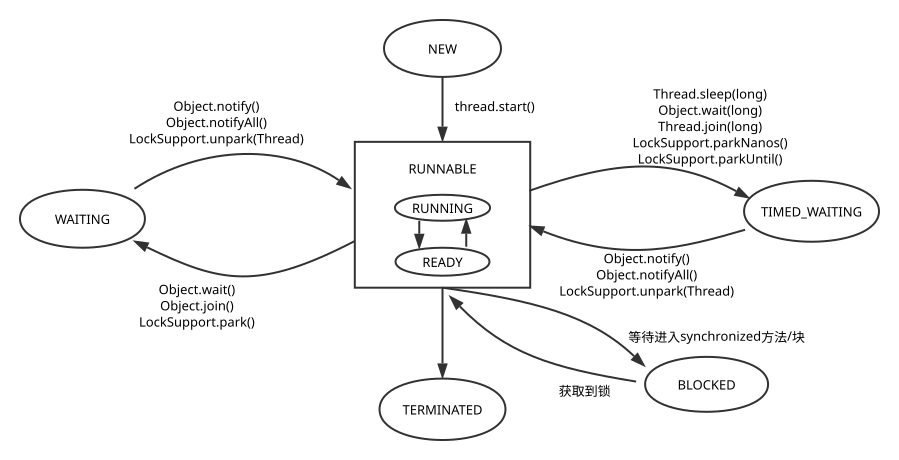

查看JVM线程信息 居然还有这么好的东西
1 2 3 4 5 6 7 8 9 10 11 12 13 14 15 16 17 18 19 20 21 22 23 package chapter04;import java.lang.management.ManagementFactory;import java.lang.management.ThreadInfo;import java.lang.management.ThreadMXBean;public class MultiThread public static void main (String[] args) MultiThread.showThreadsInfo(true , true ); } public static void showThreadsInfo (boolean lockedMonitors, boolean lockedSynchronizers) ThreadMXBean threadMXBean = ManagementFactory.getThreadMXBean(); ThreadInfo[] threadInfos = threadMXBean.dumpAllThreads(lockedMonitors, lockedSynchronizers); for (ThreadInfo threadInfo : threadInfos) { System.out.println("[" + threadInfo.getThreadId() + "] " + threadInfo.getThreadName()); } } }
线程优先级靠谱吗 1 2 3 4 5 6 7 8 9 10 11 12 13 14 15 16 17 18 19 20 21 22 23 24 25 26 27 28 29 30 31 32 33 34 35 36 37 38 39 40 41 42 43 44 45 46 47 48 49 50 51 52 53 54 55 56 57 58 59 60 61 62 63 64 65 66 67 68 package chapter04;import java.util.concurrent.CyclicBarrier;import java.util.concurrent.TimeUnit;public class ThreadPriority public static final int _SIZE = 10 ; private volatile boolean isEnd; private CyclicBarrier cyclicBarrier; public ThreadPriority () cyclicBarrier = new CyclicBarrier(_SIZE); isEnd = false ; } public static void main (String[] args) ThreadPriority threadPriority = new ThreadPriority(); threadPriority.run(); } public void run () Job[] jobs = new Job[_SIZE]; for (int i = 0 ; i < _SIZE; i++) { int priority = i < 5 ? Thread.MIN_PRIORITY : Thread.MAX_PRIORITY; jobs[i] = new Job(priority); Thread thread = new Thread(jobs[i]); thread.setPriority(priority); thread.start(); } try { TimeUnit.SECONDS.sleep(5 ); } catch (InterruptedException e) { e.printStackTrace(); } isEnd = true ; for (Job job : jobs) { System.out.printf("%5d %15d\n" , job.priority, job.count); } } private class Job implements Runnable private int priority; private int count; public Job (int priority) this .priority = priority; this .count = 0 ; } public void run () try { cyclicBarrier.await(); while (!isEnd) { this .count++; Thread.yield(); } } catch (Exception e) { e.printStackTrace(); } } } }
很显然，你需要运行一下上面的代码。
线程的状态
state
说明
NEW
初始状态，线程被构建，但还没调start()
RUNNABLE
运行状态，Java将操作系统中的就绪和运行中两种状态笼统称为“RUNNABLE”
BLOCKED
阻塞状态，表示线程阻塞于锁
WAITING
等待状态，需要等待其它线程做出一些特定操作（通知或中断）
TIME_WAITING
超时等待，不同于WAITING，它可以在指定时间后自行返回
TERMINATED
终止状态，线程执行完毕

Daemon线程 1 2 3 4 5 6 7 8 9 10 11 12 13 14 15 16 17 18 19 20 21 22 23 24 25 26 27 28 package chapter04;public class DaemonThread public static void run () Thread daemon = new Thread(new Runnable() { public void run () try { System.out.println("daemon running..." ); } finally { System.out.println("hello world" ); } } }); daemon.setDaemon(true ); daemon.start(); } public static void main (String[] args) run(); } }
daemon线程中的finally有可能不会被执行。
启动和终止线程 规范：最好给自定义的线程起个名字，便于jstack分析等。
理解中断 1 2 3 4 5 6 7 8 9 10 11 12 13 14 15 16 17 18 19 20 21 22 23 24 25 26 27 28 29 30 31 32 33 34 35 36 37 38 39 40 41 42 43 44 45 46 47 48 49 50 51 52 53 54 55 package chapter04;import java.util.concurrent.TimeUnit;public class InterruptYou public static void main (String[] args) InterruptYou test = new InterruptYou(); test.run(); } public void run () Thread sleepBeauty = new Thread(new sleepRunner(), "sleepBeauty" ); Thread keepRunning = new Thread(new keepingRunner(), "keepRunning" ); sleepBeauty.start(); keepRunning.start(); try { TimeUnit.SECONDS.sleep(3 ); } catch (InterruptedException e) { e.printStackTrace(); } sleepBeauty.interrupt(); keepRunning.interrupt(); System.out.println("sleep " + sleepBeauty.isInterrupted()); System.out.println("keep " + keepRunning.isInterrupted()); } private class sleepRunner implements Runnable public void run () try { TimeUnit.SECONDS.sleep(100 ); } catch (InterruptedException e) { e.printStackTrace(); } finally { System.out.println("wow" ); } } } private class keepingRunner implements Runnable public void run () try { while (true ) { } } finally { System.out.println("hoops" ); } } } }
一个线程被成功中断，那它的中断标志位被复位，即置成false，随后抛出中断异常。
优雅的终止线程 1 2 3 4 5 6 7 8 9 10 11 12 13 14 15 16 17 18 19 20 21 22 23 24 25 26 27 28 29 30 31 32 33 34 35 36 37 38 39 40 41 42 43 44 45 46 47 48 package chapter04;import java.util.concurrent.TimeUnit;public class ElegantTerminate public static void main (String[] args) new ElegantTerminate().run(); } public void run () Runner runner = new Runner(); Thread thread = new Thread(runner, "control terminate" ); thread.start(); try { TimeUnit.SECONDS.sleep(2 ); } catch (InterruptedException e) { e.printStackTrace(); } runner.cancel(); } private class Runner implements Runnable private volatile boolean isOn; public Runner () isOn = true ; } public void run () while (isOn) { System.out.println("I'm running" ); try { TimeUnit.MILLISECONDS.sleep(200 ); } catch (InterruptedException e) { e.printStackTrace(); } } } public void cancel () isOn = false ; } } }
等待/通知机制
原来线程被唤醒是从wait()之后开始执行，保存了线程上下文的。
1 2 3 4 5 6 7 8 9 10 11 12 13 14 15 16 17 18 19 20 21 22 23 24 25 26 27 28 29 30 31 32 33 34 35 36 37 38 39 40 41 42 43 44 45 46 47 48 49 50 51 52 53 54 55 56 package chapter04;import java.util.concurrent.TimeUnit;public class NotifyWait private static Object lock = new Object(); private boolean flag = true ; public void run () throws InterruptedException Thread teacher = new Thread(new Notifier(), "hello" ); Thread student = new Thread(new Waiter(), "world" ); student.start(); TimeUnit.SECONDS.sleep(2 ); teacher.start(); } public static void main (String[] args) throws InterruptedException new NotifyWait().run(); } private class Notifier implements Runnable public void run () synchronized (lock) { flag = false ; System.out.println("Notifier" ); lock.notify(); } } } private class Waiter implements Runnable public void run () synchronized (lock) { System.out.println("抢一把锁" ); while (flag) { try { System.out.println("我要睡了" ); lock.wait(); System.out.println("把我叫醒" ); } catch (InterruptedException e) { e.printStackTrace(); } } System.out.println("Waiter" ); lock.notify(); } } } }
ThreadLocal的使用 1 2 3 4 5 6 7 8 9 10 11 12 13 14 15 16 17 18 19 20 21 22 23 24 25 26 27 28 29 30 31 32 33 34 35 36 37 38 39 40 41 package chapter04;import java.util.concurrent.TimeUnit;public class MarkInThread public static final ThreadLocal<Integer> flag = new ThreadLocal<Integer>(); public void copyA () flag.set(8 ); System.out.println(flag.get()); } public void copyB () System.out.println(flag.get()); } public static void main (String[] args) MarkInThread test = new MarkInThread(); test.run(); } public void run () Thread w = new Thread(new Runnable() { public void run () copyA(); } }, "copyA" ); Thread r = new Thread(new Runnable() { public void run () copyB(); } }, "copyB" ); w.start(); r.start(); } }
ThreadLocal对象的set(value)方法会将value写到当前thread的map<ThreadLocal, Object>中，而且key是弱引用。
1 2 3 4 5 ThreadLocal<Integer> flag = new ThreadLocal<Integer>() { @Override protected Integer initialValue () return 0 ; }
线程应用实例 notify和notifyAll的区别 1 2 3 4 5 6 7 8 9 10 11 12 13 14 15 16 17 18 19 20 21 22 23 24 25 26 27 28 29 30 31 32 33 34 35 36 37 38 39 40 41 42 43 44 45 46 47 48 49 50 51 52 package chapter04;import java.util.concurrent.TimeUnit;public class DiffNotify public static void main (String[] args) throws InterruptedException new DiffNotify().run(); } public void run () throws InterruptedException final Object lock = new Object(); Thread t1 = new Thread(new Runnable() { public void run () synchronized (lock) { try { lock.wait(10 * 1000 ); System.out.println("t1" ); } catch (InterruptedException e) { e.printStackTrace(); } } } }); Thread t2 = new Thread(new Runnable() { public void run () synchronized (lock) { try { lock.wait(10 * 1000 ); System.out.println("t2" ); } catch (InterruptedException e) { e.printStackTrace(); } } } }); t1.start(); t2.start(); TimeUnit.SECONDS.sleep(1 ); synchronized (lock) { lock.notifyAll(); } } }
搞懂notify和notifyAll的区别在设计连接池中比较有用，并且在设计其它程序时可以根据它们的特性进行最优选择。
分别运行上面的程序，就会发现：
区别很明显了，那什么时候用notify，什么时候用notifyAll呢？聪明的你肯定会列出它俩的优缺点比较一下吧。
简单线程池 池子是一个95后脱口秀演员，额，sorry，今天不聊他。
1 2 3 4 5 6 7 8 9 10 11 12 13 14 15 16 17 18 19 20 21 22 23 24 25 26 27 28 29 30 31 32 33 34 35 36 37 38 39 40 41 42 43 44 45 46 47 48 49 50 51 52 53 54 55 56 57 58 59 60 61 62 63 64 65 66 67 68 package chapter04;import java.sql.Connection;import java.util.concurrent.CountDownLatch;import java.util.concurrent.atomic.AtomicInteger;public class ConnectionPoolTest static final int _COUNT = 100 ; static final int _SIZE = 8 ; static final long _WAIT_TIME_IN_MILLIS = 100 ; static PoolA pool = new PoolA(_SIZE); static CountDownLatch start = new CountDownLatch(1 ); static CountDownLatch end; public static void main (String[] args) throws InterruptedException end = new CountDownLatch(_COUNT); AtomicInteger got = new AtomicInteger(); AtomicInteger notGot = new AtomicInteger(); for (int i = 0 ; i < _COUNT; i++) { Thread thread = new Thread(new ConnectionRunner(got, notGot), "ConnectionRunnerThread" + i); thread.start(); } long fire = System.currentTimeMillis(); start.countDown(); end.await(); long cost = System.currentTimeMillis() - fire; System.out.println("total invoke: " + (_COUNT)); System.out.println("got connection: " + got); System.out.println("not got connection " + notGot); System.out.println(cost); } static class ConnectionRunner implements Runnable AtomicInteger got; AtomicInteger notGot; public ConnectionRunner (AtomicInteger got, AtomicInteger notGot) this .got = got; this .notGot = notGot; } public void run () try { start.await(); Connection connection = pool.fetchConnection(_WAIT_TIME_IN_MILLIS); if (connection != null ) { try { connection.createStatement(); connection.commit(); } finally { pool.releaseConnection(connection); got.incrementAndGet(); } } else { notGot.incrementAndGet(); } } catch (Exception e) { e.printStackTrace(); } end.countDown(); } } }
1 2 3 4 5 6 7 8 9 10 11 12 13 14 15 16 17 18 19 20 21 22 23 24 25 26 27 28 29 30 package chapter04;import java.lang.reflect.InvocationHandler;import java.lang.reflect.Method;import java.lang.reflect.Proxy;import java.sql.Connection;import java.util.concurrent.TimeUnit;public class ConnectionDriver public static final Connection createConnection () return (Connection) Proxy.newProxyInstance(ConnectionDriver.class .getClassLoader (), new Class[]{Connection.class}, new ConnectionHandler()); } private static class ConnectionHandler implements InvocationHandler public Object invoke (Object proxy, Method method, Object[] args) throws Throwable if (method.getName().equals("commit" )) { TimeUnit.MILLISECONDS.sleep(50 ); } return null ; } } }
1 2 3 4 5 6 7 8 9 10 11 12 13 14 15 16 17 18 19 20 21 22 23 24 25 26 27 28 29 30 31 32 33 34 35 36 37 38 39 package chapter04;import java.sql.Connection;import java.util.LinkedList;public class PoolA private LinkedList<Connection> pool = new LinkedList<Connection>(); public PoolA (int initialSize) for (int i = 0 ; i < initialSize; i++) { pool.addLast(ConnectionDriver.createConnection()); } } public void releaseConnection (Connection connection) if (connection != null ) { synchronized (pool) { pool.addLast(connection); pool.notifyAll(); } } } public Connection fetchConnection (long millis) throws InterruptedException synchronized (pool) { long future = System.currentTimeMillis() + millis; long remaining = millis; while (pool.isEmpty() && remaining > 0 ) { pool.wait(millis); remaining = future - System.currentTimeMillis(); } if (pool.isEmpty()) return null ; else return pool.removeFirst(); } } }
1 2 3 4 5 6 7 8 9 10 11 12 13 14 15 16 17 18 19 20 21 22 23 24 25 26 27 28 29 30 31 32 33 34 35 36 37 38 39 40 41 42 43 44 45 46 47 48 49 package chapter04;import java.sql.Connection;import java.util.LinkedList;public class PoolB private LinkedList<Connection> pool = new LinkedList<Connection>(); public PoolB (int initialSize) for (int i = 0 ; i < initialSize; i++) { pool.addLast(ConnectionDriver.createConnection()); } } public void releaseConnection (Connection connection) if (connection != null ) { synchronized (pool) { pool.addLast(connection); pool.notify(); } } } public Connection fetchConnection (long millis) throws InterruptedException synchronized (pool) { while (pool.isEmpty() && millis > 0 ) { pool.wait(millis); break ; } if (pool.isEmpty()) return null ; else return pool.removeFirst(); } } }
线程池示例 1 2 3 4 5 6 7 8 9 10 package chapter04;public interface ThreadPool <Job extends Runnable > void execute (Job job) void shutdown () int getJobSize () }
1 2 3 4 5 6 7 8 9 10 11 12 13 14 15 16 17 18 19 20 21 22 23 24 25 26 27 28 29 30 31 32 33 34 35 36 37 38 39 40 41 42 43 44 45 46 47 48 49 50 51 52 53 54 55 56 57 58 59 60 61 62 63 64 65 66 67 68 69 70 71 72 73 74 75 76 77 78 79 80 81 82 83 84 85 86 87 88 89 90 91 92 93 94 package chapter04;import java.util.ArrayList;import java.util.Collections;import java.util.LinkedList;import java.util.List;import java.util.concurrent.atomic.AtomicLong;public class DefaultThreadPool <Job extends Runnable > implements ThreadPool <Job > private static final int MAX_WORKER_NUMBERS = 10 ; private static final int DEFAULT_WORKER_NUMBERS = 5 ; private static final int MIN_WORKER_NUMBERS = 1 ; private volatile boolean running = true ; private final LinkedList<Job> jobs = new LinkedList<Job>(); private final List<Worker> workers = Collections.synchronizedList(new ArrayList<Worker>()); private static int workerNumbers = DEFAULT_WORKER_NUMBERS; private AtomicLong workerNumber = new AtomicLong(); public DefaultThreadPool () initializeWorkers(DEFAULT_WORKER_NUMBERS); } public DefaultThreadPool (int workerNumbers) this .workerNumbers = workerNumbers > MAX_WORKER_NUMBERS ? MAX_WORKER_NUMBERS : workerNumbers < MIN_WORKER_NUMBERS ? MIN_WORKER_NUMBERS : workerNumbers; initializeWorkers(this .workerNumbers); } public void execute (Job job) if (job != null ) { synchronized (jobs) { jobs.addLast(job); jobs.notify(); } } } public void shutdown () running = false ; synchronized (jobs) { jobs.notifyAll(); } } public int getJobSize () return jobs.size(); } private void initializeWorkers (int workerNumbers) for (int i = 0 ; i < workerNumbers; i++) { Worker worker = new Worker(); workers.add(worker); Thread thread = new Thread(worker, "ThreadPool-Worker-" + workerNumber.incrementAndGet()); thread.start(); } } private class Worker implements Runnable public void run () while (running) { Job job = null ; synchronized (jobs) { if (jobs.isEmpty()) { try { jobs.wait(); } catch (InterruptedException e) { e.printStackTrace(); } } else { job = jobs.removeFirst(); } } if (job != null ) { try { job.run(); } catch (Exception ex) { } } } } } }